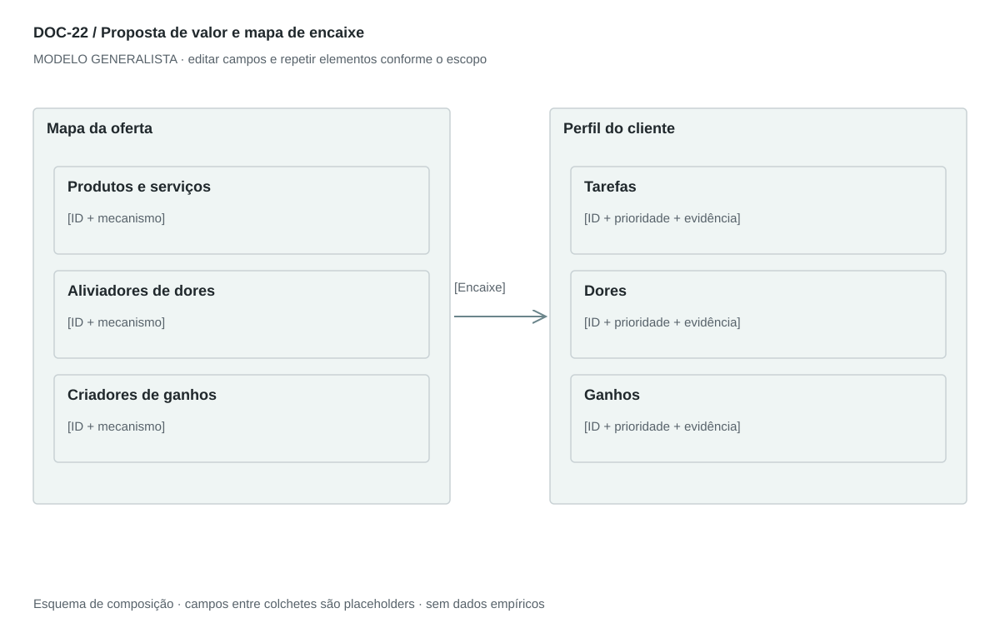

DOC-22 / Biblioteca documental generalista
Proposta de valor e mapa de encaixe
Relacionar tarefas, dores e ganhos do cliente aos elementos da oferta e às evidências de encaixe.
Modelo de investigação. Não representa uma análise concluída. Campos vazios devem permanecer identificados; não inventar dados para completar figuras.
Estrutura editorial
Uma prancha paisagem com perfil do cliente e mapa da oferta + 2 páginas de explicação. Diferenciar benefício esperado, mecanismo proposto e resultado demonstrado.
Visual previsto

Perfil do cliente à direita com tarefas, dores e ganhos; oferta à esquerda com produtos/serviços, aliviadores e criadores. Conexões por IDs evidenciam correspondência. Não exigir correspondência artificial para todos os itens.
Imagens: Diagrama vetorial original inspirado no método; ícones discretos opcionais. Imagens de produto só se reais ou claramente propostas. Não representar desempenho com selo de aprovação fictício.
Dicionário de dados
| Campo | Tipo | Dado necessário |
|---|
| segmento_id | referencia | Perfil para o qual se busca encaixe |
| job_id | referencia | Tarefa ou resultado do cliente |
| dor_id | referencia | Obstáculo associado à tarefa |
| ganho_id | referencia | Resultado valorizado |
| elemento_oferta | texto | Produto, serviço ou capacidade entregue |
| mecanismo | texto | Como a oferta altera dor ou ganho |
| conexao | texto | IDs do perfil e da oferta ligados pelo mecanismo |
| prioridade | enum | essencial, complementar ou a testar |
| prova | texto | Observação, teste ou lacuna de evidência de encaixe |
Todos os registros precisam de classificação, fonte, localização, datas, confiança e limitação. Números também precisam de unidade, moeda quando aplicável e período.
Modelo preenchível
Os quadros amarelos podem ser editados nesta página para impressão. Edições não são gravadas automaticamente: use o Markdown/JSON para manter uma versão ou imprima em PDF após editar.
[Negócio] · [Versão] · [Data-base] · [Autor] · [Audiência] · [Território]
Pergunta decisória: [A preencher]
Escopo: [A preencher]
1. Segmento e contexto
Uma proposta por persona ou segmento e situação prioritária.
[Análise + evidência + implicação + lacuna]
2. Tarefas do cliente
Resultados funcionais, sociais ou emocionais; priorize com evidência.
[Análise + evidência + implicação + lacuna]
3. Dores
Obstáculos, consequências e soluções alternativas.
[Análise + evidência + implicação + lacuna]
4. Ganhos
Resultados desejados e critérios de sucesso.
[Análise + evidência + implicação + lacuna]
5. Produtos e serviços
Elementos reais ou propostos que compõem a entrega.
[Análise + evidência + implicação + lacuna]
6. Aliviadores e criadores
Explique como cada elemento reduz uma dor ou cria um ganho.
[Análise + evidência + implicação + lacuna]
7. Encaixe e teste
Ligue os dois lados por IDs e registre evidência, lacuna e experimento.
[Análise + evidência + implicação + lacuna]
8. Declaração curta
Para [segmento] que [tarefa], a oferta [entrega] busca [resultado] por [mecanismo], em comparação com [alternativa].
[Análise + evidência + implicação + lacuna]
Decisão e próximo passo
[Decisão e justificativa]
[Alternativa considerada]
[Condição de reversão]
[Ação, responsável, prazo e critério]
Fontes e limites
[Fonte + localização + datas + o que sustenta + limitações]
Critérios de revisão
- Cada benefício tem mecanismo e condição de verificação.
- Tarefa do cliente não é funcionalidade da oferta.
- Ausência de prova não se converte em promessa absoluta.
Estudo do arquivo original
DOC-22-fonte.pdf — Três páginas retrato. Pequena imagem de value proposition canvas no topo e seis seções: jobs, pains, gains, pain relievers, gain creators e products/services. Bullets com título em negrito. A imagem é apenas orientação; o detalhamento está no texto. Algumas alegações absolutas de segurança não podem ser generalizadas.
Observação do original e adaptação recomendada são camadas distintas. Nomes, preços, localidades, contatos e conclusões do caso-fonte não devem preencher a nova análise.